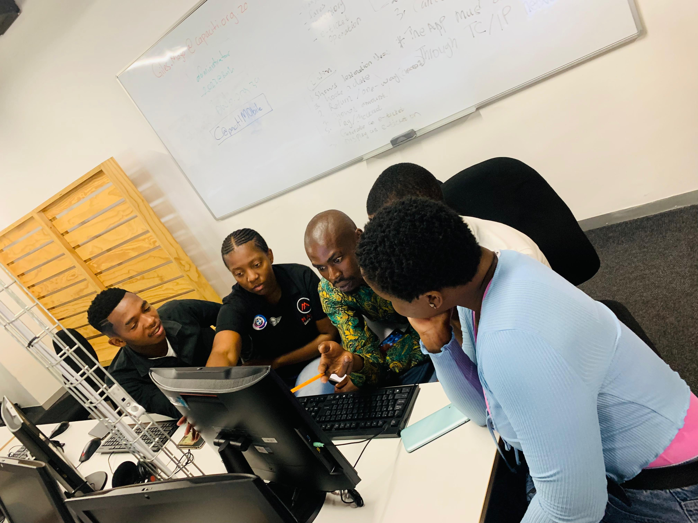

I am a passionate developer with skills in end-user computing and system development. I enjoy creating functional and user-friendly applications. I have good skills and knowledge in Microsoft applications, and I am currently studying towards Cybersecurity.
In high school, I studied commerce, and this is when I realized that I can adapt to change. For example, our school introduced a new system where they assigned a stream to each student from grade 9 to grade 10. I completed my matric in 2022 with strong results. Currently I am focusing on two fields: Information Technology and Accounting Science, which will challenge me intellectually and help me stay sharp.
Skilled in various Microsoft applications, including:
These skills enable me to efficiently handle a wide range of business and technical tasks, ensuring productivity and precision in any professional setting.
View Project Word View Project Excel View Project PowerPointI have learned many basics of coding but have gained more experience through practicals, especially in HTML.
These projects have not only strengthened my understanding of web development concepts but also enhanced my problem-solving skills. Through hands-on practice, I have learned to write clean, efficient code and design functional, user-friendly interfaces. My passion for coding continues to grow as I explore more advanced programming languages and techniques. I am eager to apply these skills to real-world projects that make a meaningful impact.
Email: tebohomaseko181@gmail.com
Phone: +27 65 567 2320